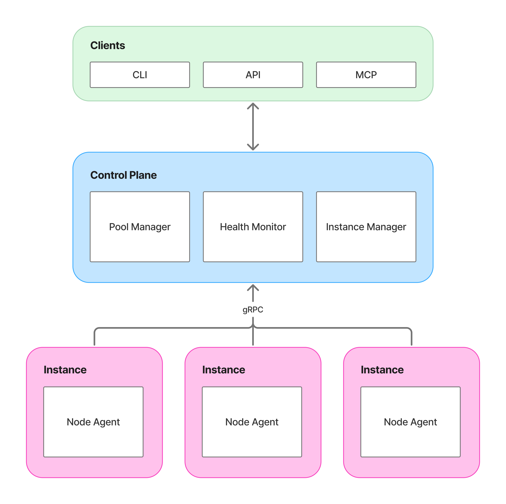

Navarch
Open-source GPU fleet management
Navarch automates provisioning, health monitoring, and lifecycle management of GPU nodes across cloud providers.
-
Detect GPU failures in real time. Catches XID errors, thermal issues, ECC faults, and NVLink failures via NVML before they crash your workloads.
-
Unhealthy nodes get terminated and replaced automatically. Define health policies with CEL expressions. Your pool stays at capacity.
-
Provision across Lambda Labs, GCP, and AWS from a single config. Failover between providers or optimize for cost.
-
Scale based on GPU utilization, queue depth, schedules, or predictions. Cooldown prevents thrashing. Combine multiple strategies.
-
Group nodes by instance type, region, or workload. Set scaling limits, health policies, and labels per pool.
-
Test policies and failure scenarios locally. Stress test with 1000+ simulated nodes before deploying to production.
Why Navarch
GPUs fail. Cloud providers give you instances, but detecting hardware failures and replacing bad nodes is your problem. Teams end up building custom monitoring with DCGM, dmesg parsing, and cloud-specific scripts. Then there's the multi-cloud problem: different APIs, different instance types, different tooling.
Navarch makes your GPU supply self-healing and fungible across clouds, all under one system to manage it all:
- Unified health monitoring for XID errors, thermal events, ECC faults, and NVLink
- Automatic replacement when nodes fail health checks
- Source GPUs anywhere. Lambda out of H100s? Failover to GCP or AWS automatically.
- Single control plane for Lambda, GCP, and AWS. One config, one API.
- Works with your scheduler. Kubernetes, SLURM, or bare metal.
How it works

The control plane manages pools, evaluates health policies, and provisions or terminates instances through cloud provider APIs.
The node agent runs on each GPU instance. It reports health via NVML, sends heartbeats, and executes commands from the control plane.
Navarch complements your existing scheduler. It handles infrastructure; your scheduler places workloads.
Quick look
# navarch.yaml
providers:
lambda:
type: lambda
api_key_env: LAMBDA_API_KEY
pools:
training:
provider: lambda
instance_type: gpu_8x_h100_sxm5
region: us-west-1
min_nodes: 2
max_nodes: 8
health:
auto_replace: true
autoscaling:
type: reactive
scale_up_at: 80
scale_down_at: 20
Next steps
-
Getting Started
Set up Navarch with Lambda Labs.
-
Core Concepts
Pools, providers, health checks, node lifecycle.
-
Configuration
Full reference for navarch.yaml.
-
Architecture
How Navarch integrates with your stack.